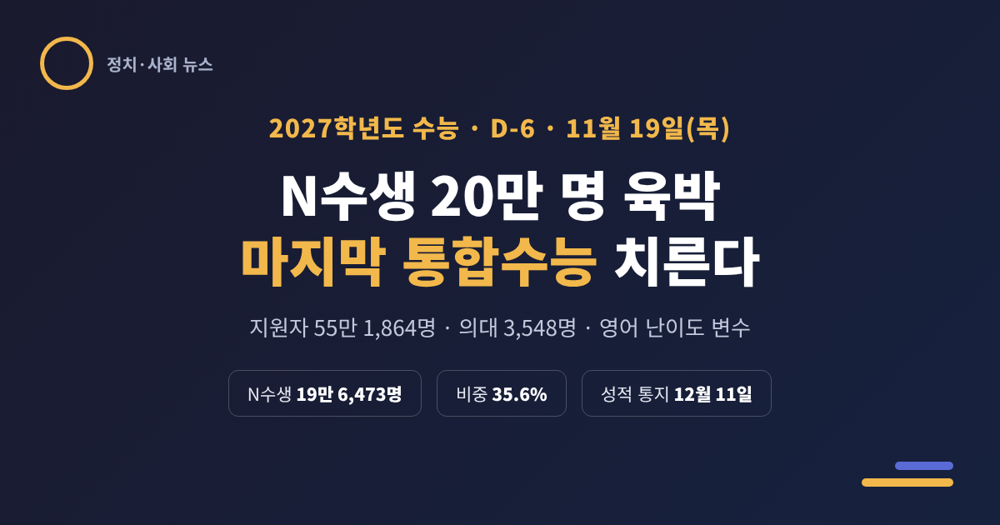
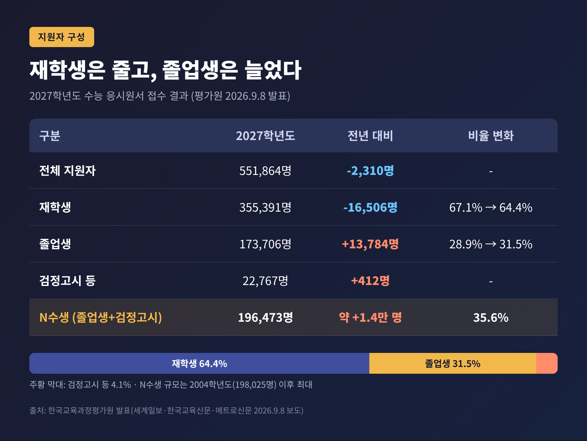
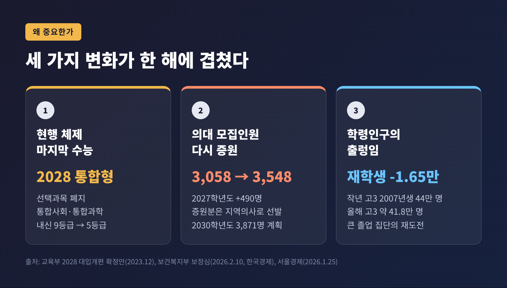
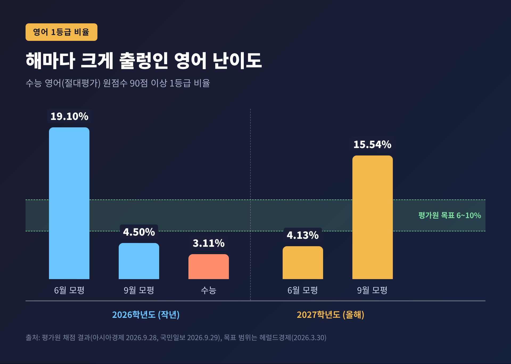
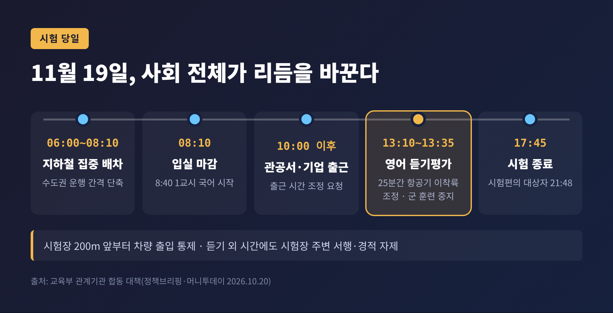
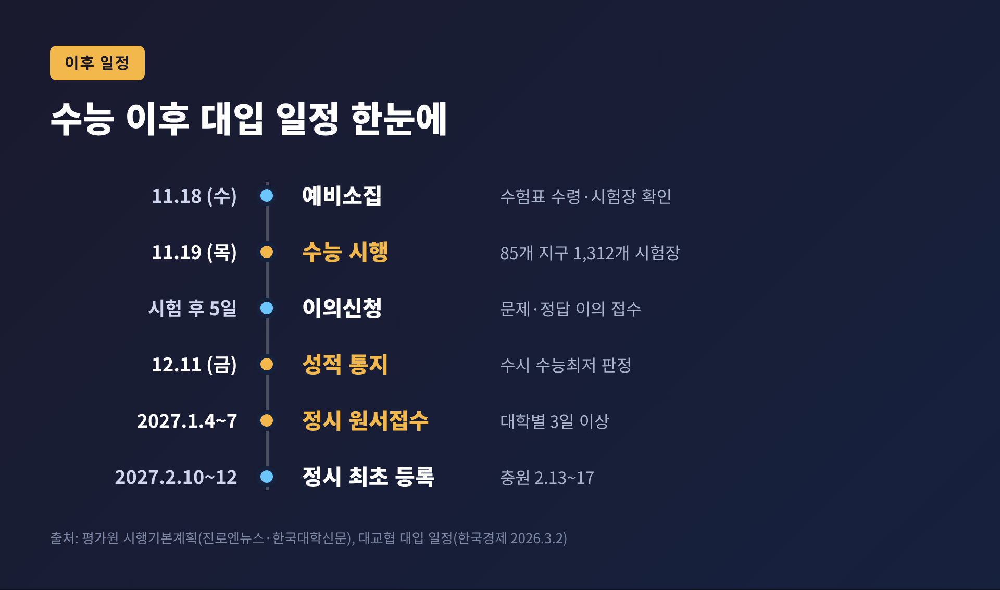

2027 수능 D-6, N수생 20만 명 육박 속 마지막 통합수능 치른다

이번 글에서는 엿새 앞으로 다가온 2027학년도 수능을 정리해 보겠습니다. 지원자 구성이 어떻게 달라졌는지, 왜 이번 시험이 유독 주목받는지, 시험 당일과 그 이후에 무엇이 기다리는지를 차례로 짚습니다.
3줄 요약
- 2027 수능은 11월 19일(목) 전국 85개 시험지구 1,312개 시험장에서 치러집니다. 지원자는 55만 1,864명으로 전년보다 2,310명 줄었습니다.
- 재학생은 1만 6,506명 줄었지만, 졸업생과 검정고시 출신을 합친 'N수생'은 19만 6,473명으로 2004학년도 이후 가장 많습니다.
- 선택과목이 있는 현행 수능의 마지막 해, 의대 모집인원 490명 증원, 작년 '영어 1등급 3.11%' 충격이 겹쳐 난이도 예측이 어느 해보다 어렵습니다.
■ 무슨 일이 있나 — 11월 19일, 55만 명의 하루
시험은 11월 19일 오전 8시 40분에 시작해 오후 5시 45분에 끝납니다. 입실 마감은 오전 8시 10분입니다. 하루 전인 18일에는 예비소집이 열려 수험표를 받고 시험장 위치를 확인합니다.
한국교육과정평가원이 9월 8일 발표한 응시원서 접수 결과는 이렇습니다. 전체 지원자는 55만 1,864명입니다. 지난해 55만 4,174명보다 2,310명(0.4%) 줄었습니다.
숫자만 보면 큰 변화가 없어 보입니다. 속을 들여다보면 이야기가 달라집니다.

재학생은 35만 5,391명으로 1만 6,506명(4.4%) 줄었습니다. 반대로 졸업생은 17만 3,706명으로 1만 3,784명(8.6%) 늘었습니다. 검정고시 등 출신도 2만 2,767명으로 소폭 증가했습니다.
졸업생과 검정고시 출신을 합친 이른바 'N수생'은 19만 6,473명입니다. 전체 지원자의 35.6%, 세 명 중 한 명꼴입니다. 2004학년도(19만 8,025명) 이후 23년 만에 가장 큰 규모라는 것이 언론의 공통된 분석입니다. 다만 졸업생 수만 놓고는 표현이 엇갈립니다. 한국교육신문은 '역대 최대'로, 세계일보·신아일보는 '23년 만에 최대'로 보도했습니다. 'N수 20만 명 시대'라는 말은 정확히는 '20만 명 육박'에 가깝습니다.
■ 왜 중요한가 — 세 가지 변화가 한 해에 겹쳤다
이번 수능이 주목받는 이유는 하나가 아닙니다. 제도·정원·인구라는 서로 다른 축의 변화가 같은 해에 맞물렸습니다.

첫째, 선택과목이 있는 현행 수능의 마지막 해입니다. 2028학년도부터 수능은 선택과목 없는 통합형으로 바뀝니다. 사회·과학 탐구는 모든 수험생이 통합사회·통합과학을 치르고, 고교 내신도 9등급에서 5등급 체제로 전환됩니다. 2023년 말 국가교육위원회 의결을 거쳐 확정된 내용입니다. 입시업계는 상위권 수험생에게 이번 시험이 사실상 '현 체제에서의 마지막 기회'로 받아들여진다고 봅니다. 임성호 종로학원 대표는 "수능 제도 개편으로 올해 고3이 되는 학생들이 재수를 선택하기에는 부담이 크다"고 짚었습니다(서울경제).
둘째, 의대 모집인원이 다시 늘었습니다. 보건복지부 보건의료정책심의위원회는 2월 10일 2027학년도 의대 모집인원을 490명 늘린 3,548명으로 확정했습니다. 2026학년도 3,058명에서 늘어난 규모입니다. 2028~2029학년도는 3,671명, 2030학년도부터는 공공의대·전남의대 신설분을 더해 3,871명으로 계획돼 있습니다. 2024학년도 정원(3,058명)을 넘는 인원은 모두 '지역의사'로 뽑습니다. 발표 직후부터 입시업계에서는 합격선 하락과 N수생 확대를 점치는 전망이 잇따랐습니다(머니투데이).
셋째, 학령인구의 출렁임입니다. 지난해 고3은 이른바 '황금돼지띠' 2007년생이었습니다. 서울경제 보도에 따르면 고3 수험생은 2024년 40만 2,596명에서 2025년 44만 21명으로 늘었다가, 올해 고3은 41만 8,351명 수준으로 줄었습니다. 예전엔 고3 규모가 수능 판도를 좌우했습니다. 지금은 그 큰 졸업 집단이 재도전에 나서며 N수생 규모를 끌어올리고 있습니다. 재학생이 줄었는데도 전체 지원자가 거의 그대로인 이유가 여기에 있습니다.
여기에 작년 수능의 여진도 더해졌습니다. 2026학년도 수능 영어 1등급 비율은 3.11%로 절대평가 전환 이후 가장 낮았습니다. 수시 수능최저학력기준을 맞추지 못한 수험생이 속출했고, 당시 오승걸 평가원장은 사과 엿새 만에 물러났습니다. '한 번 더' 도전하려는 수요가 커질 수밖에 없는 배경입니다.
■ 쟁점 하나 — '적정 난이도'는 가능한가
평가원은 올해도 '적정 난이도'를 약속했습니다. 오승걸 전 원장의 후임으로 3월 취임한 김문희 평가원장은 학교 수업과 EBS 교재로 풀 수 있는 "적정 난이도의 문항"을 내겠다고 밝혔습니다. 사교육 풀이 기술에 유리한 이른바 킬러문항은 배제하고, EBS 연계율은 간접연계 방식으로 50%를 유지합니다. 출제위원 가운데 현직 교사 비중도 33%에서 50% 수준으로 높이기로 했습니다.
문제는 영어입니다.

작년에는 6월 모의평가 19.10%, 9월 모의평가 4.50%, 본수능 3.11%로 크게 흔들렸습니다. 올해는 6월 4.13%에서 9월 15.54%로 치솟았습니다. 9월 수치는 절대평가 도입 이후 세 번째로 높습니다.
평가원이 제시한 1등급 목표 범위는 6~10%입니다. 입시업계는 6~8% 정도를 적정선으로 봅니다. 9월이 지나치게 쉬웠던 만큼 본수능은 다시 어려워질 수 있다는 관측이 많습니다. 임성호 대표는 "영어 난이도가 들쭉날쭉하면 수험생들은 학습 방향을 잡기 어렵다"고 지적했습니다(국민일보).
N수생 증가는 난이도 조절을 더 까다롭게 만듭니다. 평가원은 6월·9월 모의평가 결과로 수험생 집단의 실력을 가늠해 본수능 난도를 맞춥니다. 그런데 9월 모의평가 응시자는 39만 6,118명으로 실제 지원자보다 15만 명 넘게 적었습니다. 모의평가에 나오지 않은 N수생이 많을수록 '보이지 않는 상위권'의 실력을 읽기 어려워집니다.
■ 쟁점 둘 — 선택과목 쏠림과 의대 증원을 둘러싼 시각
선택과목 쏠림도 역대급입니다. 탐구 영역 지원자의 69.6%(36만 7,073명)가 사회탐구만 골랐습니다. 지난해보다 8.6%포인트 높습니다. 과학탐구만 고른 비율은 22.7%에서 14.2%로 떨어졌습니다. 수학에서는 확률과 통계 선택이 64.9%로 늘고 미적분은 32.4%로 줄었습니다. 이른바 '사탐런'·'확통런'입니다.
이런 쏠림에는 양면이 있습니다. 수험생 입장에서는 학습 부담을 줄이고 상위 등급을 노리는 합리적 선택입니다. 반면 과학탐구 응시자가 줄면서 남은 과탐 응시생은 상위 등급 확보가 더 어려워지고, 등급컷 예측도 불확실해졌다는 지적이 나옵니다.
의대 증원을 바라보는 시각은 더 첨예하게 갈립니다. 대한의사협회는 "숫자에만 매몰된 정부의 결정"이라며 반발했습니다. 휴학생과 군 복귀생이 몰리는 2027년 교육 현장이 감당하기 어렵다는 이유입니다. 반대로 한국환자단체연합회는 의사 부족 추계보다 증원 규모가 오히려 줄었다며 유감을 표했습니다. 지방 의대 졸업생이 수도권으로 빠져나가지 않도록 정원 회수 장치를 법으로 정하라는 요구도 함께 냈습니다. 같은 490명을 두고 '너무 많다'와 '너무 적다'가 동시에 나오는 셈입니다.
■ 시험 당일 — 출근 10시, 듣기평가 25분은 하늘길도 멈춘다
교육부는 10월 20일 관계기관 합동 대책을 발표했습니다. 수험생 한 명 한 명의 이동과 집중을 위해 사회 전체가 하루의 리듬을 바꿉니다.

- 관공서와 기업의 출근 시간은 오전 10시 이후로 늦춰 달라고 요청했습니다.
- 수도권 지하철은 오전 6시~8시 10분 집중 배차로 운행 간격을 줄입니다.
- 시험장 200m 앞부터 차량 출입이 통제됩니다.
- 3교시 영어 듣기평가 시간인 오후 1시 10분~1시 35분에는 항공기·헬기 이착륙이 조정되고 포 사격·전차 기동 같은 군 훈련도 멈춥니다.
- 듣기 외 시간에도 시험장 주변 버스·열차는 서행하고 경적을 자제합니다.
수험생이 챙길 유의사항도 있습니다. 휴대전화·스마트워치·블루투스 이어폰·전자담배는 반입할 수 없고, 1교시 전 제출하지 않으면 부정행위가 됩니다. 올해는 AI 스마트안경이 명시적으로 금지 대상에 올랐습니다. 착용만 해도 사용으로 간주돼 당해 시험이 무효가 되고 다음 해 응시 자격까지 잃습니다. 모바일 신분증은 인정되지 않습니다. 주민등록증·운전면허증·여권 같은 실물 신분증을 챙겨야 합니다. 시계는 통신·전자표시 기능이 없는 아날로그만 허용됩니다. 4교시 탐구는 과목당 30분씩 정해진 순서대로 풀어야 하며, 첫 과목 시간에 두 번째 과목 문제지를 보면 부정행위로 처리됩니다. 한국사는 필수라서 응시하지 않으면 성적 전체가 무효입니다.
■ 앞으로의 일정과 전망
시험이 끝나도 입시는 이어집니다.

- 문제·정답 이의신청: 시험 후 5일간
- 성적 통지: 12월 11일(금)
- 정시 원서접수: 2027년 1월 4~7일 중 대학별 3일 이상
- 정시 최초 등록: 2027년 2월 10~12일, 미등록 충원은 2월 13~17일
전망은 크게 세 갈래로 정리됩니다.
첫째, 상위권 경쟁의 밀도입니다. N수생 비중이 35%를 넘고 의대 문이 넓어진 만큼, 최상위권 정시 경쟁은 한층 치열해질 가능성이 큽니다. 다만 상위 의대와 주요 학과의 합격선은 크게 흔들리지 않을 것이라는 분석도 있습니다.
둘째, 영어와 수능최저의 연쇄 효과입니다. 영어가 쉬우면 수능최저 충족자가 늘어 변별력이 국어·수학 고난도 문항과 내신으로 옮겨갑니다. 어렵게 나오면 작년처럼 최저 미충족이 속출할 수 있습니다. 어느 쪽이든 수시 결과까지 영향을 줍니다.
셋째, 2028 체제로의 이행입니다. 내년부터는 통합형 수능과 내신 5등급제가 적용됩니다. 현행 체제에서 재수를 준비하기 어려워지는 만큼, 이번 N수 급증이 일시적 정점이 될지는 아직 확인되지 않았습니다. 2028 제도가 실제로 어떤 경쟁 구도를 만들지도 첫해를 지나 봐야 알 수 있습니다.
정리하면 이렇습니다. 이번 수능은 수험생 개인의 시험이면서, 제도 전환과 의대 정원, 인구 구조가 한꺼번에 투영된 시험입니다. 남은 엿새 동안 수험생에게 필요한 것은 거창한 전략보다 익숙한 리듬일 것입니다.
"마지막 통합수능"이라는 이름은 무겁지만, 시험지 앞의 하루는 누구에게나 똑같이 한 번입니다. 이번 수능에서 무엇을 가장 바라느냐고 물으신다면, 준비한 만큼만 온전히 풀고 나오는 것이라고 답하겠습니다.
출처
- 정책브리핑(교육부), 「11월 19일 수능날, 출근시간 10시 이후로…시험장 200m 전방 차량 통제」, 2026-10-20 — https://www.korea.kr/news/policyNewsView.do?newsId=148973935
- 정책브리핑, 「수능 당일 '스마트안경' 착용하면 내년까지 시험자격 박탈」, 2026-11 — https://www.korea.kr/news/policyNewsView.do?newsId=148975290
- 머니투데이, 「수능날 관공서 출근 10시로 늦춰…영어 듣기평가 때 항공기 통제」, 2026-10-20 — https://www.mt.co.kr/policy/2026/10/20/2026102009215029184
- 세계일보, 「올해 수능에 N수생 20만명 몰렸다… 23년 만에 최대치」, 2026-09-08 — https://www.segye.com/newsView/20260908508271
- 한국교육신문, 「수능 졸업생·사탐런·확통런 뚜렷… 역대 최대」, 2026-09-08 — https://www.hangyo.com/news/article.html?no=109200
- 메트로신문, 2027 수능 원서접수 결과, 2026-09-08 — https://www.metroseoul.co.kr/article/20260908500225
- 신아일보, 「올해 수능 N수생 19만6천명…'23년 만에 최대'」, 2026-09-08 — https://www.shinailbo.co.kr/news/articleView.html?idxno=5059839
- 한국대학신문, 「2027 수능, '현행 체제 마지막' 승부수」, 2026-03-31 — https://news.unn.net/news/articleView.html?idxno=591206
- 진로엔뉴스, 「2027 대학수학능력시험 시행 기본계획 발표」, 2026-04-02 — https://www.jinron.kr/news/articleView.html?idxno=3438
- 헤럴드경제, 「11월 19일 수능…평가원 '적정난도 유지'」, 2026-03-30 — https://www.heraldk.com/article/2026033018340941404
- 베리타스알파, 「'마지막 통합수능' 2027수능.. N수생/의대증원/사탐런 '역대급 불확실성'」, 2026-03-31 — https://www.veritas-a.com/news/articleView.html?idxno=603792
- 아시아경제, 「수능 영어 어려워지나…9월 모평 '물영어'에 1등급 비율 15.5%」, 2026-09-28 — https://view.asiae.co.kr/article/2026092817224633490
- 국민일보, 「영어 '9월 모평' 1등급 15.5%나… 작년 '난이도 참사' 재연 우려」, 2026-09-29 — https://www.kmib.co.kr/article/view.asp?arcid=9000017963&code=11131300&sid1=soc
- 한국경제, 「2027학년도 의대 모집인원 490명 증원」, 2026-02-10 — https://www.hankyung.com/article/2026021072561
- 머니투데이, 「올해 의대 490명 증원 결정…'비수도권' 'N수' 입시판 술렁인다」, 2026-02-10 — https://www.mt.co.kr/policy/2026/02/10/2026021010103546751
- 뉴스더보이스, 「환자단체 '의대정원 축소 유감' vs 의사단체 '의학교육 붕괴'」, 2026-02-11 — https://newsthevoice.com/news/articleView.html?idxno=45129
- 서울경제, 「'의대 새 통로 생겼다' 2027학년도 N수생 10% 늘듯」, 2026-01-25 — https://www.sedaily.com/article/20000346
- 뉴시스, 「수능날 'AI 안경' 쓰면 N수생 된다…'모바일 신분증' 안 돼」, 2026-11-09 — https://www.newsis.com/view/NISX20261109_0003859881
- 파이낸셜뉴스, 「[수능 D-7] 전자기기 제출 안 하면 부정행위로 간주」, 2026-11-12 — https://www.fnnews.com/news/202611120936521143
- 한국경제, 2027학년도 대입 일정, 2026-03-02 — https://www.hankyung.com/article/2026022790951
- 대한뉴스, 「2028 대입, 선택과목 없는 통합형 수능…내신 5등급 체제」, 2023-12-27 — https://dhnews.co.kr/news/view/1065582804564237